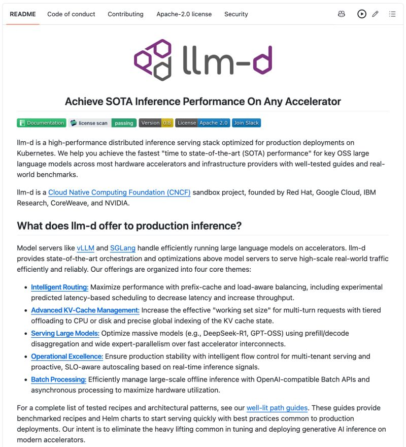

Filed 29 Aug 2026 · Published 27 Aug 2026
llm-d: state-aware Kubernetes inference serving
Kubernetes meets LLM inference.

Post summary
Akshay Pachaar’s LinkedIn post presents llm-d as an orchestration layer above vLLM and SGLang for Kubernetes-hosted LLM inference. Its central argument is that ordinary round-robin service routing discards the value of prefix/KV-cache reuse because replicas differ by the cache blocks they retain. It highlights a live cache-location index, cache-affinity routing with a load-aware fallback, tiered GPU/CPU/disk cache offload, and separating compute-bound prefill from memory-bandwidth-bound decode.
Primary-source quick pass
The public llm-d/llm-d GitHub repository, named in a captured author comment, was inspected directly by read-only network requests rather than through LinkedIn. At commit 1f97eb0f928fd3c6509fce984ad67af83d65d3e8 observed 2026-08-29, its Apache-2.0 README describes Kubernetes-oriented distributed inference, integrations above vLLM and SGLang, prefix-cache/load-aware routing, tiered CPU/disk KV-cache offload, prefill/decode disaggregation, and SLO-aware flow control/autoscaling. The project’s own performance list ties the 3x-throughput/2x-TTFT routing result to Llama 3.1 70B on 4 AMD MI300X GPUs and the 13.9x offload result to 4 NVIDIA H100 GPUs at 250 concurrent users; these are project-reported benchmark results, not independent replication.
A CNCF announcement independently confirms that llm-d was accepted as a Sandbox project and describes its launch by Red Hat, Google Cloud, IBM Research, CoreWeave, and NVIDIA. AWS’s published llm-d collaboration describes prefill as compute-bound and decode as memory-bound. Its stated test used GPT-OSS on an ml.p6-b200.48xlarge with a 1,024-token input and 1,024-token output at up to 128 concurrent requests; it reports up to 70% more tokens per second for its disaggregated path than a standard vLLM deployment and explicitly says that results vary by workload and configuration.
Book relevance
- Candidate chapters: LLMOps and inference infrastructure; cache-aware routing; production scaling; and agent-system cost/latency engineering.
- Candidate claim: repeated context turns KV-cache reuse into shared serving state, so routing, eviction, storage tiers, and prefill/decode placement can materially affect latency and cost alongside model and prompt choices.
- Practical counterweight: cache affinity must be balanced against saturation; cache-index freshness, eviction races, cross-pool transfer, workload locality, and tail latency determine whether the benefit survives production traffic.
- Privacy and governance: KV-cache state can encode sensitive prompt or user context. Multi-tenant/session isolation, access boundaries, retention/eviction policy, telemetry, and stale/poisoned-cache safeguards are design requirements, not secondary tuning details.
Hermione relevance
Hermione’s repeated system prompts, tool schemas, and long-lived research context could benefit from compatible cache reuse if she is served through a self-hosted inference stack. Any such adoption should scope cache state to the right user, tenant, and session boundary; measure mixed-workload TTFT, inter-token latency, throughput, and cache-hit behavior; and preserve a load-aware fallback rather than assuming that a warm replica is always the right destination.
Evidence strength
The LinkedIn post and its engagement are social/discovery evidence. Primary sources strongly support llm-d’s public repository, Apache-2.0 license, Kubernetes-oriented architecture, documented integrations, and CNCF Sandbox status at the inspected point in time. The specific performance values are vendor/project-authored benchmark claims with stated configurations; the AWS result is an AWS-published workload-specific test. No independent benchmark reproduction, security assessment, or production deployment evaluation was performed.
Caveats
- The post’s headline performance figures are not general guarantees: prefix locality, model, accelerator, concurrency, cache tier, network fabric, routing thresholds, and workload mix can change results substantially.
- Standard Kubernetes routing is configurable in real deployments; the durable lesson is that state-unaware balancing can undermine cache locality, not that every Kubernetes Service is intrinsically unsuitable.
- The visible comment discussion itself flags stale cache indexes, eviction races, warm-replica hotspots, transfer latency, and negligible gains for unique-prompt traffic. One promotional comment was not treated as technical evidence.
- Ten guest-visible comment records were archived while LinkedIn reported fourteen. The authenticated viewport showed only the initial thread; collapsed text and further comments/replies were not expanded.
- Raw guest HTML/metadata and the authenticated visible-page text, JSON, and screenshot remain local-only. The authenticated capture showed the target post, no login wall, and no CAPTCHA/security checkpoint; no LinkedIn control or link was clicked.